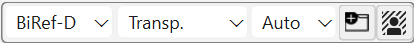

Background removal
The AI detects the subject and makes the background transparent or replaces it. You can also process only a selection or a masked area.
Toolbar

12345
| 1Model | Model / method for background processing (see below). |
| 2Background | Transp. / White / Blur / Color (palette color). |
| 3Threshold | Auto, or 10 (narrow removal) to 90 (wide). |
| 4Folder | When on, running processes every image in the same folder (you choose to overwrite or save separate files first). |
| 5Run | Runs background removal, foreground removal or color replacement. |
Choosing a model
| Model | Characteristics |
|---|---|
| BiRef-D (BiRefNet_dynamic) | High-accuracy general model. Handles hair and fine detail fairly cleanly. Start here. |
| BiRef-M (BiRefNet_dynamic-matting) | Focused on edge matting. Try it when BiRef-D gives hard edges. |
| BEN2 | Detailed edges for people and products. When contours and hair matter. |
| base | General background removal. Stable, but fine hair and semi-transparent edges can be rough. |
| MVANet | High-detail model. Strong on detail but heavier. |
| Foreground removal | The reverse of normal: removes the foreground and keeps the background. |
| Color replacement | No AI. Replaces colors close to the pen color with transparent, white or a set color. For plain backgrounds. |
Examples
 Before
BeforeAfter
Before
After
 Before
Before After
AfterProcessing only part of the image
- Select an area with a selection tool, then use "Background processing for selection" in the Selection processing menu.
- Use "BGRemove (Part)" in the inpainting tools to process only the masked area.